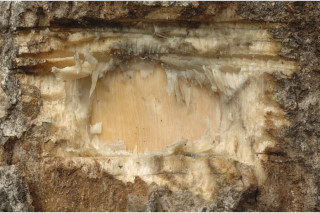
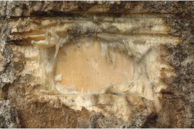
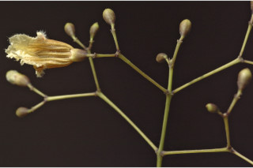
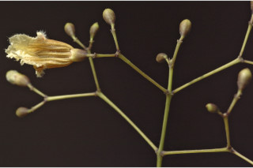

Tamil: Ambu, Ambuvaginim Kural, Padiri, Ponpadiri, Poombathiri, Vellaippadri, Vela pathri. Malayalam: Pathiri, Poopathiri, Karingazha. Kannada: Bondh vala, Kaala adri, Kalludi, Katniruli, Lingadare gida, Malali, Pathiri, Vaadari. English: Trumpet flower tree, Yellow snake tree.
Stereospermum personatum (Hassk.) Chatterj.; Bignonia colais Buch.-Ham. ex Dillw.; Stereospermum tetragonum DC.
Taxon 27: 553. 1979; Gamble, Fl. Madras 2: 998. 1993 (re. ed); Sasidharan, Biodiversity documentation for Kerala- Flowering Plants, part 6: 335. 2004; Keshava Murthy and Yoganarasimhan, Fl. Coorg (Kodagu) 322. 1990.
 



 
